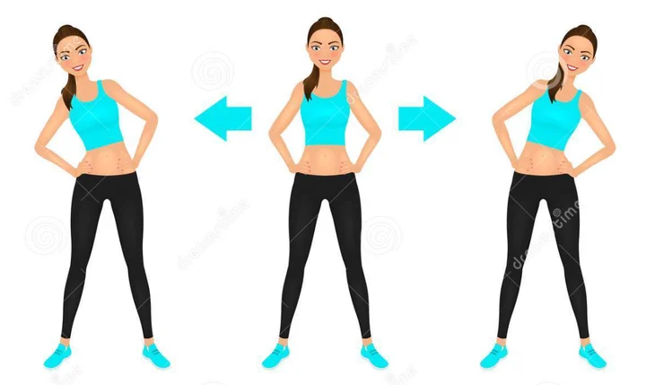
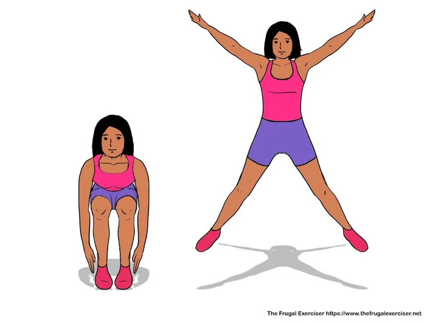
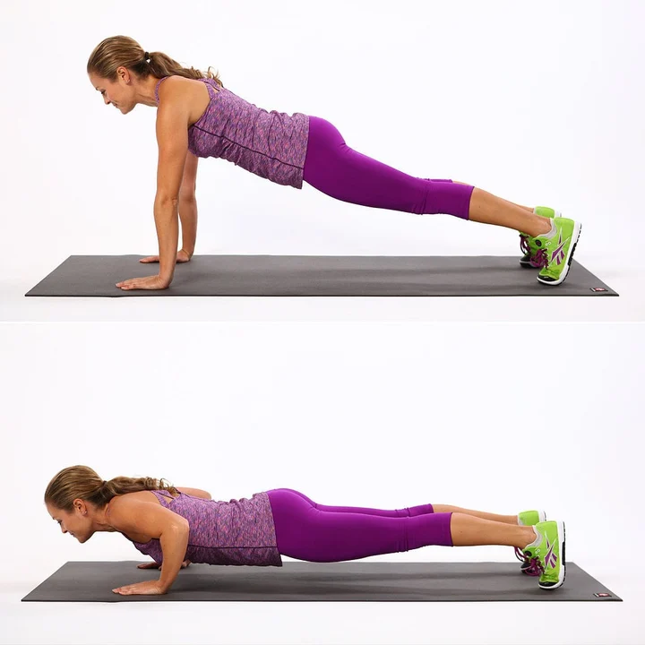
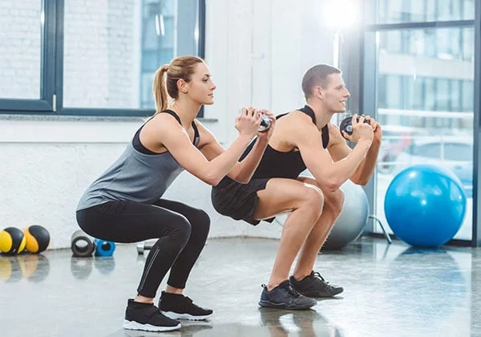
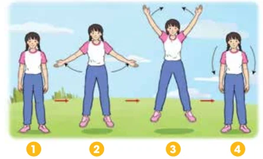
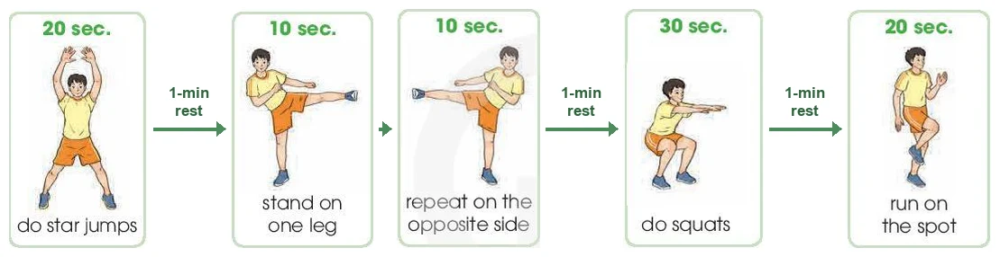

Giving instructions
for an exercise routine
Lesson 4 — Speaking
1Five stops in 45 minutes
- 🕺
Move!
Follow the video
5 min - ⭐
Star jumps
Words + Task 1
9 min - 🔥
Burn fat
Tasks 2–4
20 min - 🧑🏫
Your routine
Lead the class
8 min - ✅
Wrap-up
Homework
3 min
Warm-up
Stand up and move!
5 minutesWatch, listen and do it!
Which instructions do you remember? Give the commands yourself: clap your hands · turn around · jump · stomp your feet.
Star jumps
New words and Task 1
9 minutes



To do star jumps properly, follow four steps

1. To begin with, b · stand with your arms down at your sides and your feet slightly apart.
2. Then, d · jump with your feet apart and your arms spread out.
Steps 3–4
3. As you jump, c · open your legs wider than your shoulders and move your arms out, creating a star shape while in the air.
4. Finally, a · jump back to your starting position and repeat.
Halves a–d
a jump back to your starting position and repeat · b stand with your arms down at your sides and your feet slightly apart · c open your legs wider than your shoulders… · d jump with your feet apart and your arms spread out
Complete the tips
1. Start by introducing the process.
To do press-ups properly, you should follow three steps.
2. Sequence the steps, using linking words: first, second, next, after that, finally…
3. Give one direction at a time.
How to burn fat
Tasks 2–4 · page 13
20 minutesThe ‘How to burn fat’ routine

You can burn fat by doing this simple exercise routine. (1) First, do star jumps for 20 seconds. (2) Second, take a one-minute rest. (3) Next / Then, stand on one leg for 10 seconds …
Give the instructions for the rest
- 🦵
10 sec
repeat on the opposite side
- ⏸️
1 min
rest
- 🏋️
30 sec
do squats
- 🏃
1 min + 20 sec
rest, then run on the spot
Then, repeat on the opposite side for 10 seconds. After another one-minute rest, do squats for 30 seconds. Finally, rest for another minute and run on the spot for 20 seconds.
Read & move!
- 📣
Instructor
Speak loudly and clearly. Use First, Second, Next, Then, Finally. One step at a time.
- 🤸
Group
Listen carefully. Follow each step in the correct order and timing.
- 👀
Class check
Clear voice? Correct order? Correct exercise? Good teamwork?
Ready? 3 – 2 – 1 – MOVE!
Your own routine
Free practice
8 minutesCreate another exercise routine
Make a short routine — e.g. a warm-up for your P.E. lesson.
Then demonstrate it and give instructions. The class follows you!
To warm up properly, you should follow four steps. First, … Then, … Finally, …
Give instructions without naming the exercise — the group guesses it.
What have you learnt today?
- 🗣️
Language
How to give clear instructions for an exercise routine.
- 📚
Words
slightly · star jump · press-up · squat
- 🔗
Linking words
First · Second · Next · Then · After that · Finally
Homework
1. Do the Speaking exercises in the workbook.
2. Practise giving the instructions for the routine at home.
3. Get ready for Lesson 5 — Listening.